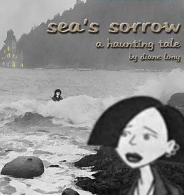
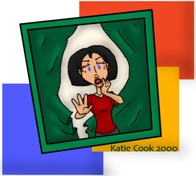

Sea's Sorrow
by Diane Long
Note: This story takes place outside of my usual continuum. It stands alone.
Daria climbed out of the Tank and looked at the immaculate bed and breakfast. A salty October breeze ruffled her hair as she cocked her head back inside the van and made eye contact with Trent. "Are you sure this is the place?"
Trent squinted through the windshield. "It's the right address. What's the problem?"
Daria looked back at the Victorian house and took in the festively painted gingerbread woodwork that adorned the front porch and cornice, the cheerful jack-o-lanterns, and the festive pots of chrysanthemums that framed the front steps. This place was much nicer than she had expected. "No problem. Are you sure this is free?"
Trent grinned. "Yep. Pretty nice gig, huh? I told you being our roadie would pay off." His eyes held hers for a long moment, then he busied himself with folding up the roadmap.
Daria blushed and unloaded her backpack and travel bag from behind the front seat. She hoisted the former over her shoulder and used both hands to drag the latter up the porch steps. She had made it half way up when the ornate, leaded glass front door swung open and a rotund man in his early fifties rushed out to assist her.
"Oooch, lassie, let me give you a hand with those," he exclaimed in a patently fake Scottish accent. He grabbed her suitcase away from her and effortlessly swung it towards the door where it landed with a soft thump.
Daria winced, glad that she had decided not to pack her laptop in there, after all.
Grinning, the man reached for Daria's backpack. She quickly backed down a step, and said, "That's okay, I have it."
"Sure you do. Sean McElfresh, Innkeeper, at your service." He extended a heavily freckled hand for Daria to shake.
Daria took his hand reluctantly. "Ummm, hi."
The man pumped her hand vigorously causing his red curls to jiggle around the bald spot crowning his head. "Welcome to 'Sea's Sorrow'. You must be a member of Mystik Spiral come to serenade us with your lovely voice."
Daria reclaimed her hand. "Actually...."
Trent came up beside her and placed a hand on her shoulder. After giving her a significant look he said, "Yeah, she's with us."
Daria rolled her eyes and went back to the Tank to find her laptop. Dear God, she was a roadie. What had the world come to?
Trent shook his head as he watched her go. "Hard to find good help these days. I'm Trent Lane, lead singer of Mystik Spiral. Nice to meet you. Thanks for letting us stay here." He extended his hand.
Giving Trent a hearty handshake, Mr. McElfresh asked worriedly, "Errr, since she works for you, she's not with you right?"
Trent reclaimed his hand and frowned. "She's a highschooler, man. This band's not like that." Trent's body language spoke loudly of bruised honor.
The innkeeper's worried expression cleared. "Of course you're not. I beg your pardon. Come inside and let's get the paperwork squared away. I've got three rooms for you. One for the lassies and two for you lads. Evening tea is in a few minutes, so let's get you all squared away so we can chat in the parlor."
As the two went inside, Daria was trying to squirm between Nick and Max to get to her laptop. She saw it wedged tightly between two amps. Unfortunately Nick and Max were indulging in another little rant over the equipment and were blocking the way. Jesse looked on, mildly amused.
Nick stood with his hand on his hips. "I can't believe you put my bass under the drum kit. It's probably crushed!"
Max glared back and crossed his arms. "Well, that's what you get, man! I'm a criminalé! Who knows what I might do!"
Daria wondered if she might be rolling her eyes for the rest of the trip. They were already sore from overuse from the first five minutes here. She hoped she had brought enough Visine. "Excuse me?"
Nick and Max stopped arguing and look at her blankly.
Daria tried again. "Excuse me, but I'd like to get my laptop."
They both stepped back so Daria could lean in and pull the computer out from between the two amps. It was wedged in rather tightly, and it took some wiggling to pull it free.
"See that? You almost smashed Daria's laptop, too! That is uncool, man. You're wrecking a highschooler's stuff. You should be more careful," Nick started in again.
"You were the one who loaded the sound equipment. You can't blame everything on me!" Max agitatedly tugged on his nose ring.
Laptop in hand, Daria hurried away from the pair. She hoped her room was very far away from theirs. She would not be able to tolerate very much of their constant bickering. Those two made Jesse look like a rocket scientist. And that was scary. She stumped up the porch steps, pushed open the front door, and stepped into the foyer. It was decorated with period antiques and lit with flickering gas lamps. The effect was immediately cozy and inviting. If she could avoid the band, this weekend promised to be relaxing and quiet. Off to the left and through a set of pocket doors, Daria saw a parlor which featured a merry little fire going in the fireplace and several overstuffed leather chairs by the windows. A perfect spot for reading.
Intrigued, Daria stepped further inside the room. It got better. Each of the chairs had a reading lamp nearby and a round table with assorted snacks in little glass bowls. Daria sat down her laptop and reached for a Hershey's kiss. As she removed the silver foil wrapper she stepped closer to the window. Through the sheer drapes she could see the waves rolling onto the shore only a few hundred feet beyond. She hadn't realized that they were this close to the ocean. She had thought it would be a couple of blocks away, not right in the backyard. This was a very nice B&B. She wondered how Trent had pulled this one off. Cape May was an elegant resort town. It was incredibly expensive in the summer when all of the wealthy Washingtonians fled the capital to vacation in the many elegant B&Bs that crowded the town. Given that, she had really been expecting to stay in the shabbiest, most in-need-of-rehab place in the town. It was the off-season, though. Maybe things just got quiet here after September. Still musing, she pushed the drapes aside and he stuck her nose on the glass of the window. It was chilly and when she breathed, the glass steamed up. She smiled; she hadn't done that since she was a little kid. As the steam evaporated, the ocean came back into view. It really was too bad it was too cold to swim. Though it still might be nice to bundle up and take a walk along the beach. Maybe Jane would like to come along and sketch.
She jumped a little when she felt a hand on her shoulder. "Yes?"
When no one answered, she turned around to see who it was. Oddly enough, she was the only person in the room. She rubbed her shoulder absently. Well, that was weird. It was probably her muscles complaining about the ten-hour drive.
"Daria!"
Daria looked up to see a smiling Jane with Tom in tow entering the parlor. "Hey."
"Hey, yourself. Have a nice ride up with the band?" Jane smiled knowingly.
Daria smirked; she wasn't going to let Jane catch her that easily. "Oh, yes. Listening to Nick and Max argue for hours is my favorite pastime."
Tom smirked back. "We offered to let you ride up with us."
"I meant it when I said I would never ride in that car." Daria smiled, but just a little.
Tom noticed the smile and looked pleased. "Yeah, that's probably smart. We barely made it here."
Jane piped up, "Yeah, good thing we had the glue gun with us or we would still be stranded on the highway!"
Tom grinned and grabbed Jane's hand. She grinned back. It was pretty clear they both had drifted into their own little world.
Ugh. This was too much. "Uh-huh. Tom, I hate to tell you this, but you have a huge smear of red lipstick by your right ear," Daria said.
Looking embarrassed, Tom rubbed a hand along his throat then looked at his palm. It was clean. Confused, he looked at Daria.
She grinned evilly. "Made ya look. I'll see you guys later, I'm going up to my room to unpack." She walked into the foyer, gathered up her bags and started up the stairs.
"Daria? What happened?"
Daria paused on the staircase landing and looked down into the foyer. A concerned Jane was standing in the parlor's threshold.
"Hmmm?" Daria asked.
Jane's brow creased. "That's odd, from this angle, for just a second, you looked wet."
"Wet?"
"Yeah. Must've been the light from the green stained glass window over there. Weird." Jane scratched her head.
"Sure you didn't inhale too many of those glue fumes?"
Tom stuck his head around the doorway and leered. "Nah, it's just a lack of oxygen. Let me see what I can do about that." He grabbed Jane around the waist and pulled her back into the parlor.
Daria shook her head at the obvious silence that followed and continued on to her room.
Chapter Two
When Daria came back downstairs, there was a little gathering of people chatting over tea and pastries in the parlor. A quick scan showed her that all of her companions were present, and she noticed another cluster of strangers clustered by the fireplace. They looked oddly intense, as if they expected something to happen.
Daria walked over to Jane and raised an eyebrow. "Who are they?"
Jane handed Daria a cup of tea and smirked. "Wait'll you get a load of this. They're Ghostbusters."
"Come again?"
"You heard me. These people are here to investigate ghosts."
"Oh, my God." Daria watched as a member of the group tapped experimentally on the paneling, as if they were expecting to find a secret compartment. "This is going to be stupid, isn't it?".
Jane snorted and took a bite of a crumpet. "It gets better. I saw these guys on 'Sick Sad World' once. Total crackpots. They almost burned down the last place they investigated."
"Great." Daria blew on her tea. Just what she needed, a weekend with crackpots. She could have stayed home for that.
Jane slurped noisily on her tea. "Get this. Our very own bed and breakfast has its own haunted tale."
Daria looked skeptical. "Of course it does."
Jane's face took on a spooky intensity. "Seriously. Did you see the name on of the place on the little painted sign out front? 'Sea's Sorrow'? Apparently, the daughter of the house had a fling with the hired help. Daddy killed her in a fit of rage, then hung himself." Jane paused dramatically. "In our room. Cool, huh?"
Daria yawned. "I guess. Where'd you learn all of this?"
Jane dug into her pockets and fished out a crisp $100 bill. She waved it under Daria's nose. "The kooks want our room. This is for considering it."
"Cool. Looks like dinner's on you." Daria glanced over at the band, and almost laughed. They were holding their china tea cups awkwardly, as if they were afraid they might break them. They were also eyeing the English pastries uncertainly, as if they wanted to eat, but weren't quite sure how to go about it. Since they had generously let her tag along for the gig, she decided to take pity on them. "Be right back."
Daria walked over to Trent. "Want to split a scone?" she asked.
"A what?"
Daria set her teacup on the sideboard after she was certain Trent had noticed how she had been holding it. "A scone. One of these." She lifted up a scone and showed it to him.
"I though that was a biscuit." He smiled sheepishly.
"It sort of is, but better. Watch." She split the scone in half, grabbed two dessert plates and set each half on its own plate. She buttered the halves, slathered on raspberry jam, and topped each of with a generous dollop of whipped cream. When she turned around to hand Trent his plate, she noticed he was holding his teacup more confidently.
"Thanks, Daria. How'd you know how to do that?"
Daria took a bite of scone and considered. After she swallowed she said, "I think I read about it in Wuthering Heights or Jane Eyre; I can't remember."
Daria looked up from her teacup and noticed that Trent had wandered over to the upright piano while she had been talking. His brow wrinkled as he flipped up the key cover and experimentally fingered a few soft notes. The tune seemed oddly familiar to her, but she couldn't place it. As she continued to watch he started to play the phrase more loudly, but he stopped abruptly as if he couldn't remember the ending notes.
Jane wandered over to Daria and smirked. "What's Beethoven up to? People are staring." Jane flipped her hair to indicate that one of the ghost hunters was giving Trent an odd look.
"I have no idea, but it's nice," Daria said, still watching Trent.
"Nice? Daria, it sounds like something from the 'Bride of Frankenstein'." Jane directed her attention to Trent. "Yo, why not add in a little more melodrama while you're at it. Maybe they have a pipe organ in the dining room."
Trent's hands froze, and he slowly looked over his shoulder at Jane with narrowed eyes. "Shhh! I've almost got it," he said rather sharply.
Jane's eyes widened and she looked over at Daria who shrugged and said, "Artists. You oughta know."
Jane looked wounded, but was prevented from making further conversation when Mr. McElfresh rapped on the table for silence. The assorted pockets of chatter died down and everybody looked at him expectantly.
"I'm glad to welcome you all to the Sea's Sorrow B&B. We provide tea like this every afternoon between four and six, and I hope you will all attend everyday, so we can get to know each other better. I'd like to welcome the members of the Duke paranormal research team. They are here on holiday, but I can tell they can't stop looking for ghosts. I hope they don't find anything out of the ordinary." Mr. McElfresh looked uneasily at Mystik Spiral. If he expected a reaction from them, he didn't get one. They all looked bored.
Mr. McElfresh continued, "And as is tradition, we are providing room and board for one of the bands that will performing in our Harvest Carnival on the town green this weekend. Mystik Spiral and their roadies, everyone."
The women who had been watching Trent snapped around and pointed at Daria, and shouted, "That's it! I thought the aura of this room changed when she walked in. She's the locus of the psychic phenomenon we felt earlier!"
Daria's eyes went wide as she found herself the center of silent attention.
Trent looked mildly impressed and said, "Cool."
Daria put her head in her hand and winced.
"Nah, " Jane drawled. "That's just her personality. It can drop the temperature of a room by five degrees."
Head still in hand, Daria looked askance at Jane, the wince sliding into a glare.
"What? I was just trying to help."
Mr. McElfresh wrung his hands and laughed nervously. "Ah, a funny little joke. Now where was I? Oh yes, the carnival. For those of you who don't know, the Harvest Carnival is put on by our town council to celebrate the end of the tourist rush. We don't get to be our own community except for the winter months when the tourism is slower and we enjoy every second of it. We bring in entertainment from all over the country, and it's tradition for the B&Bs around here to put up traveling musicians free of charge."
The woman who had shouted at Daria put her teacup on the mantel and fixed Daria with an appraising stare. "I'm sure it will be interesting spending time with you." She addressed it to everyone, but it was clear she had focused on Daria.
Daria was feeling completely mortified by now, but hid it behind her usual mask of expressionless indifference. She had a sinking feeling that this woman was going to pester her all weekend. She looked down at the Oriental rug trying to decide how to best deal with this awkward situation. To her surprise, Tom came over to stand by her side and was staring down the strange woman.
"Yeah," he said, "interesting." He put an arm around Daria's shoulders in a sign of camaraderie that surprised her. "If you'll excuse us, we 'roadies' have some work to do. Sound checks, you know."
He looked over at the band. "We'll meet you down here in hour for dinner."
Daria willingly let herself be lead out of the room. Jane followed closely on their heels.
"I think we need to talk. Your room?" He looked at Daria questioningly.
Chapter Three
The trio marched up the staircase and were silent until they were behind the closed doors of Daria and Jane's room.
Jane flopped down on the double bed. "What the hell was that all about? I thought she was teasing until the end there. She looked scary."
"I know." Tom sat on the edge of the bed. "I didn't like the way she looked at Daria."
Daria leaned against the door and crossed her arms. "Please. All she did was embarrass me in front of Trent... I mean, in front of the band. I can handle it."
Tom looked at Daria closely. He had a bad feeling about all of this. "Probably. Just be careful, okay?"
Daria's expression didn't change. "Okay."
Jane smiled sardonically. "Daria can take care of herself, Tom. Don't fuss. Besides, if she needs rescued, she would prefer Trent over you."
"Look, I need to take a shower. See you guys later." Daria looked at them pointedly.
"Okay, see ya." Tom got up and headed towards the door.
"I think I'll hang out here in the room." Jane stretched out on the bed.
"Bye." Tom blew Jane a kiss and left.
Daria shook her head. "Disgusting."
"Ah, you're just jealous."
"Not anymore." Daria admitted as she opened the door of the adjoining bathroom. She looked over her shoulder. "Resting?"
Jane pulled a sketchpad out of her backpack. "Yeah, and drawing. This place inspires me. Spooky vibes, ya know?"
"Sure you're not afraid to be left alone, Jane?" Daria deadpanned.
"Yeah, right." Given the way she had been raised, being alone was a normal state. She peeled back a layer of paper coating from her charcoal pencil and began sketching the Victorian knickknacks that were scattered across the dresser top. Combined with the brocade shaded lamp they made a nice still life. As she roughed in the basic shapes, she listened to the water pipes moan as Daria started the shower. God, it sounded like there was something dying between the walls. That was probably typical of the plumbing in old houses like this though. Humming tunelessly, Jane continued to sketch.
"...."
Jane paused and looked up. Had she heard something? She listened closely. Maybe Daria needed a towel or something. All she could hear was the sound of the shower. Shrugging, Jane went back to work on her sketch. She was trying to capture the intricate pattern of grape vines that curled around the lamp's brass base. The craftsmanship was exquisite and challenged her rendering skills. The tip of her tongue parted her lips as she concentrated. This motif would make a nice border for a painting she was working on at home.
"... can you hear me?" came a voice faintly from the bathroom
"Yo!" Jane answered, not looking up. She was starting to get the turn of the of the leaf just so.
"Listen!"
"Yeah?" Jane glanced towards the closed bathroom door. "Do you need something?"
"Not again."
Jane frowned and put down her sketchpad. Was Daria crying? It sure sounded like it. She got up and tired to open the door. It was locked. "Daria? You okay? Hey, unlock the door."
The only response was the continued running of the shower.
"Are you alright?" Jane listened closely. The water had stopped. "Daria?" She tried the handle again, and this time it turned easily. Concerned, Jane stepped into the steamy bathroom. "Is everything ...."
"Gahhh!" A wet and naked Daria streaked back into the shower and pulled the curtain shut. "Lane! What the hell are you doing?!?"
Jane blushed. "Uh, didn't you call me?"
"No!"
"Are you sure?"
"Of course I'm sure. Can I have some privacy please?" Daria groused from behind the shower curtain.
"Fine," Jane said a little miffed, certain Daria was trying to scare her. "Whatever."
Jane left, shutting the door sharply for emphasis. What was up with that? Maybe Daria was still a little jealous of Tom or something. She had thought they were past all of that. Jane sat back down on the bed and grabbed her sketchbook. Now, where was she? Ah, yes. The grape vine. She looked up at the lamp and did a double take. Shaking her head in disbelief, Jane got up again and walked over to the dresser. She ran a hesitant finger over the lamp base. It was smooth, with no trace of grapes or vines. Shocked, she stayed there staring at it, half expecting the pattern to return of it's own volition.
"Interesting lamp?"
Jane yelped and spun around. "Jesus, Daria! You almost gave me a heart attack."
Now dressed in her usual attire, Daria paused in combing out her damp hair and remarked dryly, "Imagine that. At least you have your clothes on."
Jane picked up on her meaning but was to shaken to volley a retort. "Come here. Look at the lamp and tell me what you see?"
Under Jane's watchful eyes Daria scrutinized the lamp. "Ummm, some sort of harvest design with grapes and leaves on the brass."
"What?!" Jane's eyes left Daria's face and flew to the lamp. Daria was right. The design was back. "Daria, something weird is going on here. First, I heard voices calling to me from the bathroom, then this pattern disappeared and reappeared." Jane shivered a little. This was freaky.
"Uh-huh," Daria said sarcastically. "It's an old house, Jane. You probably just heard water in the pipes or something. Don't let those stories get to you."
Jane's nostrils flared. She didn't like being dismissed. "I'm serious Daria."
"So am I. Let's go down and join the guys for dinner. I'm starving."
Stung and a little hurt that Daria hadn't taken her seriously, Jane balked. "Well, I need a shower too. I'll be down in about fifteen minutes."
"Fine." Daria turned and headed out the door. Her steps were more like stomps, and caused the hangers in the closet to jangle softly.
Jane shook her head and hoped dinner would put them all in a better mood. She also hoped that she had been hearing things, and wouldn't hear any more when she was in the shower.
A half an hour later and feeling fresh and alert from her perfectly normal shower, Jane headed down the staircase and scanned the foyer for her friends. They were nowhere in sight and she hoped they hadn't left for dinner without her. She knew she had taken a long time in the bath, so maybe they had been too hungry to wait. She paused in front of the front door and thought, Now where could they have gone? Maybe Mr. McElfresh would know. She turned to head towards the innkeeper's small apartment in the back of the house when a whisper of music and a soft sigh caught her ear. Intrigued, she tracked the sound to the parlor. The pocket doors were mostly shut, with only about an inch of open space between them. Unable to resist, Jane pressed the side of her face to the crack and looked inside. Her eyes widened in shock at the scene before her.
The lights were dimmed and the fire was burning low, providing only a deep orange glow from the embers. Daria and Trent were seated side by side on the piano bench. Seated very close together. Trent chuckled lowly and began to play the chords for "Heart and Soul" while Daria tentatively picked out the melody with her index finger. Before she had played six notes, she had already begun to forget which notes went where. Chuckling again, Trent stopped playing chords, took her hand, and began to guide her throughout the note progression. His lips moved, as if he were telling her something, and his eyes held a disturbingly sly expression.
Jane leaned harder against the door, trying to hear what was being said. This just couldn't be what it looked like. No way. She braced herself by grabbing onto the edges of the doors with each hand.
Daria tilted her head towards Trent and smiled. She tried to tug her hand away from his grasp but he held on tightly. He raised the hand to his lips and turned it over and kissed her palm, while holding her eyes with his own. She stared at him in surprise, but didn't move away as he started to tilt his head closer. His lips brushed hers lightly as he let go of her hand and wrapped his arms around her.
Jane squeaked and in her surprise accidentally pushed on the doors she was gripping. They slid neatly back into their pockets, and she spilled unceremoniously onto the floor. As she sprawled there, Daria and Trent's eyes popped open. There was a frozen moment before the two of them exploded apart. Daria jumped straight up and tripped over the piano bench as she tried to run away. She landed on top of Jane with a loud thump. Trent flew back and crashed into the piano keys with a discordant clatter of music. They all stared at each other in disbelief.
"Ooof," Jane complained after a long moment of silence. "Get off of me."
Daria rolled off of Jane and sat up. She looked at Trent and flushed. "What was that?"
Trent just stared at her.
Jane sat up too, and rubbed the bruise on her leg from where one of Daria's boots had clipped her. "That's what I'd like to know."
Trent shifted and rubbed his palms on his jeans. "Ummm..." He looked acutely embarrassed. "I...."
Daria got to her feet and straightened her skirt. "Dinner?" she asked desperately.
Trent took the lead gratefully. "Right!"
He shot out of the room, closely followed by Daria. Jane ambled along behind them, still trying to figure out exactly what had happened.
Chapter Four
After a huge feast of streamed crabs and pasta, Jane and Daria were settling in for the night. Daria pulled the feather comforter closely around her neck and watched Jane, wearing men's pajamas, digging through her suitcase.
"Looking for something?" she asked sleepily.
Without pausing, Jane muttered, "Yeah. My sanity. Just what were you and my brother doing earlier?" She continued to rummage around while she waited for an answer.
Daria yawned. "Hmmm? Besides eating dinner?"
Jane stopped what she was doing and looked at Daria. "Yeah. The parlor? Your piano lesson?" she said significantly.
"What are you talking about?"
Jane stood up and spread her arms wide. "You. Trent. Kissing."
Daria snorted. "Careful Jane, you're starting to let the line between dreams and reality fade again." She rolled away from Jane and curled into a little ball.
"Whatever, Daria. You'll have to talk about it sometime." Jane flipped off the overhead light and climbed into bed next to Daria. She curled up on her side, facing the other direction, and hugged her pillow, noting how stiff Daria was beside her. Neither one of them had expected to share a bed.
"Jane?" came Daria's voice out of the darkness.
"Hmmm?"
"You're... you're not a snuggler, are you?" Daria asked uncomfortably.
"No, Daria. Goodnight."
"'Night."
Jane continued to stare in to the darkness, listening to the quiet sounds of Daria breathing, and straining for sounds of anything else untoward. This place was spooky, all right. She shivered a little and felt gooseflesh prickling out all over her skin. This room was not cool. All thoughts of Trent and Daria's kiss faded as the darkness seemed to press in on her with a palpable force.
"Daria? You awake?"
"Kinda," Daria said in a sleep heavy mutter.
"Listen, I really did hear something calling me earlier. And the lamp... I don't know what that was about, but I really think something strange is going on here. Would you mind if we traded rooms with those psychic kooks?" She waited for a reply. "Daria? You awake?" The silence informed her that her best friend had drifted off, probably not hearing a word he had said. Jane pulled the blankets over her nose and tried to go to sleep. She strained to hear any unusual sound. Once she thought she heard the hangers in the closet jingle softly, but when it didn't happen again, she allowed herself to drift off into a deep, dreamless slumber.
Much later, Daria bolted upright. "Owwww!"
Daria bolted upright and rubbed her thigh. It still stung from the vicious pinch she had just received. She glared over at Jane's shadowy form in bed next to her. "What was that for?"
Jane's only reply was a slight snore.
Daria frowned and shook Jane awake. "Why'd you pinch me?"
Jane looked at her blearily, obviously only half-aware. "Huh? 'Cause you like macaroni, honey."
"Oh, never mind." Resolving to get her own bed tomorrow, Daria got out of bed and slipped a flannel robe over her normal sleepwear of shorts and a tee-shirt. The alarm clock on the nightstand said it was just a few minutes shy of four AM. She might as well stay up now. Taking a book with her, Daria stepped into the hallway, heading for the comfortable reading chair in the front parlor. This time of night, the gas lights were turned low and the staircase was in deep shadow. Daria stepped carefully as she went down, not wanting to risk a fall. As she descended, a faint whisper of sound caught her ears. She paused, listening. It was footsteps, and they were coming closer.
"Shhh! I feel its presence moving towards the basement. Come on. Do you have the spectral sensors warmed up yet?"
"Yes! Lets go, I'm sure we will capture it on film!"
The ghost hunters! Daria shrank back against the stairwell. The last thing she wanted was to encounter those kooks. They sounded all wound up too. They would probably think she was a ghost. While she watched from the landing, the group of parapsychologists crept into the foyer. They were dressed in safari looking khakis and held flashlights high above their heads. They looked excited and were filing down the basement stairs. Daria waited until the last one had gone and shut the basement door behind them. Then she tip-toed down the rest of the stairs and into the parlor, hoping they wouldn't hear her and come back upstairs. She pushed the old-fashioned button-style light switch and the ornate chandelier above her head put forth a faint yellowish light. It wouldn't be sufficient to read by, but when she settled into the comfortable leather wingback chair and flipped on its companion reading light, the illumination was perfect. She opened her book and began to read.
She had been reading for almost two hours when a faint tapping sound caught her attention. Great. It was probably the ghost hunters again. She hunkered down, hiding her face in her book, resolved to just ignore them if they approached her. But no one bothered her; she just heard the faint tapping sometimes accompanied by the sound of tearing paper. Daria peeked around the edge of her book and tried to identify the source of the sound. It seemed to be coming from the other side of the room, but there was nothing there but another reading chair, very much like the one she was sitting in. Daria squinted, wondering if the family cat was shredding the furniture. Well, if there was a cat there, she couldn't see it. Shrugging, Daria went back to her book. She had just settled in again, when the tapping suddenly turned into a series of sharp raps. She jumped a little, and looked back over at the chair. It sounded like someone was trying to beat their way through the wall. Feeling a little spooked, Daria put her book down and curled up into a little ball, hugging the tops of her knees.
"Daria!"
"AAAAAA!" Daria yelped and looked toward the parlor door. There stood a disheveled and wild-eyed Jane. The tapping stopped.
"Daria?" Jane strode into the room. "How long have you been down here?"
"Umm... about two hours. I couldn't sleep," she lied.
"So I guess it wasn't you crying in the bathroom, just now?"
"Jane, I'm sure it was the water pipes."
"I mean it, Daria! Our room is haunted. Why won't you at least try to trust me on this?"
Daria looked Jane straight in the eye for several seconds. "God, you're serious aren't you?"
"Yes," Jane said with quiet embarrassment, "and believe me, I can hardly believe it either."
"But..." Daria gestured helplessly. "Ghosts? Come on, Jane. Those people just messed with your mind."
"Think about it, Daria. Why would they pay me $100 just to think about turning our room over to them?"
"Another example of our wasted tax dollars at work in federally funded research?"
"No, because they really believe something is going on in our room and I believe it, too." Jane's voice took on a sulky tone and her eyes narrowed.
Daria picked up on Jane's body language and sighed. She wanted to believe Jane. But she certainly didn't believe in ghosts. "Well, maybe there is something else they want. Like treasure or a map or something," Daria tried to compromise.
Jane ratcheted up an eyebrow. "Mmm-hmm. That's tons more plausible."
Daria threw her hands up in exasperation. "Well, maybe you are just more susceptible to suggestion than I am. Maybe it comes from being an artist."
"You think I'm making this up?" Jane sputtered.
"Well, not on purpose. I just think your imagination is going into over-drive."
Jane shook her head. She was getting too mad to chance saying much more. "Later," she said crisply and head back towards the staircase.
Daria started to get mad, too. Well, excuse her for speaking her mind. "Yeah, well, watch out for that ghost in the bathroom, then," she taunted.
Jane paused in her ascension, then continued on her way with out turning around. Was it Daria's imagination, or did it seem like Jane was looking wary?
Her anger rapidly fading away, Daria tried to read her book again. Damn, why had she spoken to Jane that way? Hadn't she heard some strange things, too? And what about that pinch? For some reason she couldn't explain, she was certain it hadn't been a pinch from Jane. But who, then? She closed her book and rubbed her temples. There had to be a logical explanation; there always was. She believed in tangible things. Not the unknown. It made sense that Jane would be easily influenced by hints and a few strange circumstances. But that wasn't a problem, that was just Jane being herself. The problem was that Jane was scared and Daria had not been supportive. In fact, she had forced Jane to go back and suffer in the very room that had her terrorized. Daria sighed. If Jane wanted to switch rooms, there was no reason why they shouldn't do it. Nope, she didn't need to agree with Jane on this one, she only needed to help Jane feel less afraid.
Daria got to her feet and headed out of the parlor. Just before she crossed the threshold, a sharp briny scent caught her nose and stopped her. She turned around and saw that the window by her chair was now open and the long sheer drapes were belling out from their rods. Daria bit her lip. Now, she knew that window hadn't been open before. She walked over and shut the sash with a gentle push. It had to have just opened just now, she would have noticed the cold autumn breeze while she had been reading. Confused, Daria watched the surf crash onto the beach in the gentle laps of low tide. This was definitely weird. Maybe Jane was right. Maybe it was hubris to claim to believe only tangible things. Perhaps there was more to the world. More of the unseen, untouchable. She shivered from more than the cold of the outside air. If this were true, it would change her perception of reality, of everything. Not ready to face Jane before she had all of this sorted out, Daria stayed by the window and watched the water. Maybe it would be a good idea to go take a morning stroll by the beach. Perhaps it would clear her thoughts. Yes, the beach was a friendly place to sift through troubling thoughts. The waters of the ocean could sooth it all away. Without a thought to her thin nightclothes or bare feet, Daria slipped out the front door.
Upstairs, Jane was sitting on the bed fuming. Why was Daria being so unreasonable? It just wasn't like her. Well, maybe it was like her, but Jane wasn't used to being on the receiving end of it. Maybe it was just this place. Perhaps it brought out the worst in all of them. She thought back to the intimate moment between Daria and Trent in the parlor before dinner. If she hadn't have interrupted they would have been all over each other. Sure, there had always been some romantic tension between the two of them, but nothing like last night. Trent had looked almost mean, too. What was up with that? And then Daria had acted like none of it had happened. Very convincing, too. Unnaturally so. If she had only been trying to fake ignorance she would have been all blushes and stammers. That wasn't how she acted last night. Did she really forget? She must have, but why? Jane thought back to the events of the last few days, and she remembered surprising Daria during her shower. What if Daria hadn't been jerking her around? Was something manipulating them? Making them behave in a certain way for some unknown reason?
Jane scratched her chin. This line of thought felt right somehow. She grabbed her sketchbook, intent on making a diagram of all of the weird things that had happened to them so far. Maybe she would see a pattern if she drew it up. Wait... a pattern! She flipped in her sketchbook until she came to the sketch she had made of the lamp base's pattern. The pattern that had kept changing. Had something been trying to tell her something. Were they stuck in a pattern?
A jump of motion caught her eye and she saw the edges of the curtains flipping up, as if something were toying with them. Jane got up and took a cautious step towards them, when the hangers in the closet on the other side of the room began to jangle angrily. Jane kept edging towards the window; whatever was in the closet didn't want her to look outside, and whatever was in that closet had a horrible feeling to it. Like it would devour her if it could. Jane edged towards the windows not taking her eyes off of the closet door, which had begun to rattle.

The curtains gently wrapped themselves around her and immediately she felt protected. She looked out the window, and to her surprise she saw Daria wading into the sea.
"Daria! What are you doing?!?!" Jane shouted through the glass, her stomach turning to ice. She tried to open the window, but it was painted shut.
Daria didn't react, and was slowly wading in deeper, she was now into the water up to her thighs. It didn't look as if she were going to stop. That water must be freezing. Why was she doing this? Something was very wrong. Jane turned around and looked at the closet. The door was open wide now, daring her to run past and get help. Jane gulped, and made a choice. She ran to the bed and grabbed the one thing she believed in heart and soul: her art. Brandishing her sketchbook like a shield and closing her eyes, she dashed past the yawning closet portal and out into the hall. She had a queasy feeling of something not quite tangible grasping at her legs as she ran, but she was too fast for it.
She slammed her fist against Trent's door. "Wake up! Wake up!"
The door open and Trent squinted at Jane, rubbing his eyes. "What's wrong?"
Jane grabbed his shoulders and tried to shake some sense into him. "Gah! Wake up, you idiot! Daria is in the fucking freezing Atlantic Ocean! Probably drowning!"
"Huh?"
Jane gaped. "Daria needs our help! Come on...."
Trent tilted his head to one side. "Come on, Janey, stop fooling around. It's too early for that."
"What's wrong with you?!? Oh never mind!" Jane shifted her weight and started to sprint away.
Trent's hand shot out and he grabbed her arm, stopping her. "Whoa. You're sleep walking again, Jane. Wake up."
She looked at him oddly and yanked her arm out of his grasp. She really hoped he wasn't doing drugs again. She gave up on getting any help from him and tore down the hall, intent on saving Daria herself.
Trent stood in the hall and shook his head to clear the cobwebs. Jesus, Jane was serious. He started to run after her, and was soon wide-awake and catching up to her quickly. She might be a faster runner than he was, but he had longer legs. The front screen door slammed behind her and he pushed through seconds later, catching up with her as she pelted towards the shore. They could see the vague form of Daria's head way too far into the water. She must be in over her head by now, and seemed to be drifting on the current with no real control. Jane made as if to dive into the waves, but Trent grabbed her waist.
"Wait, Janey! You can't, you'll freeze in that water too!"
"Let go of me!" she screamed, fighting his grip. "I can't let her drown!"
"Shut up, Jane!" He wrapped his arms around her to better restrain her. "Shut-up!" His voice cracked with his own fear. "Look, the tide is going out. She's already caught in the current. It's too late." A small smile tugged at his lips.
"You mean Daria is being swept out to sea?" Jane yelped, looking around widely. "Then we need a boat! Do you see a boat?"
Trent looked to Daria's receding form only. "No, Janey. We are gonna have to let her go. It's better this way."
"What?!? There has to be something we can do! What are we going to do?!?" Jane moaned.
"We go after her," said a voice behind them.
They turned to see Tom standing ready with coils of thick rope. Behind him stood the rest of the band, looking strong and ready. Jesse already had one end of the rope tied around the front bumper of the Tank.
"A rope!" Jane shouted and wiggled out of Trent's now lose grasp. "Perfect, now tie this end around me." She grabbed the rope and started to wind it around her waist. Trent rushed over and stopped her.
"Not you, Janey. Let him go." Trent smirked at Tom's scrawny frame. He would never make it.
"Are you kidding?!?"
Trent opened his mouth to protest, but Tom cut him off. "People! We don't have time for this." He wove an intricate rope harness around Jane as he spoke. "Jane is in better shape than me and as a woman she has more body fat to protect her from hypothermia. End of story."
"My little sister is not..." Trent sputtered, but Jane was already diving into the water. As she broke into a strong free style, Trent angrily joined the others in forming the human resistance between Jane and the ocean.
Jane narrowed her focus to the bobbing shape of Daria's head. Already the cold was numbing her to the point of physical pain and she did everything in her power to ignore it. "This is just like running," she told herself over and over. "You have to feel the burn first." Of course, after the burn was over, there would be numbness. And that she feared the most.
As she swam she could feel the breakers rushing in against her strokes. She was far out enough to be able to fight it effectively but it was tiring her out. Sucking in seawater and coughing, Jane kept fighting, willing her arms to go faster, to push harder. So much was at stake here. Very quickly she fell into a mechanical pattern even though it felt like her arms didn't belong to her anymore. They were so numb with cold and exhaustion that she couldn't feel them. By force of will alone they kept beating at the water, bringing her ever closer to her friend.
Daria was almost in arm's reach now, floating on her back, her mouth and nose barely above water. She seemed so limp and lifeless, but Jane wouldn't even let herself think that Daria could be dead. She was alive. She was alive. She had to be alive. Her own strength fading, Jane made a grab for Daria. She missed and almost went under water herself. She fought the downward motion and weakly treaded water. She reached out and snagged the edge of the robe's sleeve and towed Daria closer.
"Daria? Oh man." Daria had turned a pale shade of blue, and was completely non-responsive. Jane dragged her close and with the last of her strength wrapped her arms around her best friend and flipped over so they both could float on her back. She hoped the guys had enough strength to tow them both in, because she was completely spent. Jane felt the rope at her back turn taught and suddenly she was being jerked painfully through the water. She turned to look as best as she could and saw that someone had thought to use the Tank to tow them in.
"Come on, Daria, hold on," she whispered through chattering teeth as they were pulled towards the shore. "We're almost there, partner." She felt her legs brush the bottom and before she knew it several pairs of hands were dragging her up to dry sand and taking Daria out of her weak grasp. Tom immediately covered her with a warm blanket, then turned to Daria.
Tom laid Daria on her stomach and gently placed her head to one side. Her thin nightclothes stuck to every curve of her body and were covered with sand. Her long hair spread out around her head like tangled strands of seaweed. She looked like something that belonged to the sea. Something they had stolen. Tom shook of that morbid thought and began pounding on her back. Almost at once, a steady stream of seawater poured from her purple lips. He kept up his strikes until nothing more came out. He rolled her onto her back and immediately began mouth to mouth resuscitation. Three quick breaths, three quick pumps to her stomach. Over and over, to no effect. "Come on, Daria!" he pleaded, pumping her stomach even harder.
"Tom..." Jane said desperately...
"I know," he grunted, knowing what she meant. "Daria, please!" He huffed into her mouth, including his will for her to live along with his breath.
Suddenly, Daria's eyes shot open and her back arched and she took a deep, gasping breath. Tom pulled her into a sitting position and joyfully walloped her back as she coughed the rest of the saltwater out of her lungs. Trent stood to one side looking confused. He looked out at the sea and back to Daria and shuddered. He hugged himself and looked away guiltily.
Soon, everyone was shouting at once. Jane cheered and threw her arms around Tom. They had done it! Daria was okay! She kissed him soundly and as she pulled away, she noticed two figure regarding them solemnly from the house's back porch. It was Mr. McElfresh and one of the parapsychologists, the woman who had spoken to them earlier. They noticed Jane's gaze and shook their heads sadly. Mr. McElfresh motioned for the group to follow and quickly darted inside, pulling the woman behind him.
Chapter Five
Daria and Jane were now dressed in dry clothing and bundled in blankets. They each sat in a leather chair before the fire in the parlor.
Mr. McElfresh handed them a hot cup of tea and then firmly shut the pocket doors for privacy. He did not want the other guests to overhear what he had to say. He turned to the assembled members of Mystik Spiral and smiled ruefully. He motioned to the woman and said, "Please let me introduce my sister Kate, the head of the paranormal research team. Lucky for us, she and some of her students were vacationing here for the festival."
Though quiet and subdued, Daria still managed to arch an intrigued eyebrow.
Kate looked Daria in the eye. "I was serious when I said the spirits in this house took an interest in you. I was worried that the mix of circumstances were perfect to cause trouble when I met Jane, before most of the rest of you arrived. When I learned that she was the sister to a musician, I relaxed. But soon after, she told me about you, Daria, and I started to worry again. So much so that I tried to bribe young Jane here to relinquish the room."
"Excuse me?" Daria asked weakly, still shivering a little.
Kate looked at her brother and shrugged. "This isn't going to make sense unless we tell the whole thing. Why don't you take it from here?"
Mr. McElfresh set his teacup onto the saucer with a quiet chink of china. "You see, Katie and I grew up in this house. We know its sad history. We know its ghosts very well, too."
Daria snickered weakly at this part. These people must be afraid that her parents would sue them for neglect. What a confabulation.
Mr. McElfresh looked balefully at Daria and said, "I wish it were all a joke. I really do. And you'll soon understand why. Where was I? Oh yes... these ghosts... two of them... are mostly mindless things. They plagued us throughout our childhood, hovering just out of sight, moving things around, resetting the clocks... God only knows why. But they never did us any real harm. The worst we got out of him was a viscous pinch from time to time."
Daria rubbed her thigh absently and asked, "Mostly?"
Mr. McElfresh noticed her movement but made no comment. "Yes, mostly. But to understand why they get dangerous, you need to know the story of the horrific events that happened in this house."
Jane frowned at Kate. "He means the story you told me when you tried to bribe me, right?"
Kate looked embarrassed. "Not exactly. I told you a changed version of the story for your own good. I didn't want to scare you for nothing. Here's what really happened. A wealthy physician and the younger of his two daughters lived here long ago. This was always a lush resort town, drawing even presidents to vacation here in the summers. But it was no place for an educated man to raise a bright daughter to his satisfaction. It was too isolated, too rural. The local education system was rudimentary at best. The doctor supplemented his daughter's education with a string of tutors. French teachers, artists, dance instructors, deportment advisors, and a musician to teach her to play the pianoforte." Kate paused to collect her thoughts and Mr. McElfresh picked up the thread of the tale.
"This music instructor was young and wild. He had recently immigrated from Spain and was looking for work. He claimed to be a exiled composer, but could not verify his story. The physician hired him more out of charity than any hope of broadening for his daughter's musical talents. Immediately the two young people fell into a passion for each other. An unhealthy one. The daughter was swept away by the musician's roughness and exoticness and fell into the habit of pleasing him at all costs. The musician himself was mean spirited and cruel. He was jealous of her wealth and set about to gain as much of it as he could. He had fallen in love with her money. He used his influence to undermine her self-esteem and take advantage of her in every way. He hoped to seduce her, and err.... find a way to gain control of her father's fortune." Here Mr. McElfresh blushed and looked at Jane and Daria uneasily.
Kate shook her head in wry amusement. "Sean, it's the modern world now. These girls can hear this." She focused on Jane and Daria and continued. "He got her pregnant, girls, and pleaded with the physician for the right to marry her. But here he made his fatal mistake. Instead of extolling his love for her, he besmirched her name in front of her father, claiming that she was soiled, damaged goods, and that he alone could redeem her. This lapse was all the physician needed to see his true nature. He banned the musician from the house, threatening death should he ever return."
"Ah," Mr. McElfresh piped in. "But the poor daughter thought that he had left her of his own will and could not be consoled. She spent days in the front parlor of her room, what is now your bathroom, Jane, weeping without cease. Then, in the darkest hours of the morning, a week later, the musician came back to the house and sneaked into her room. He easily made her believe the story that she wanted to hear, that her father was to blame for their separation, that he hadn't really wanted to leave her. Then, in a final act of cruelty, he convinced her that the only way they could be together was in death. He coaxed her to the sea and promised her that after he had made certain she was drowned, he would follow and they would be together forever."
"Sad, no?" Kate asked, then continued. "Instead of joining her, he went back to her rooms and ransacked them, looking for anything of value to steal. He felt cheated by her and was determined to get something of worth before he fled. He was surprised and shot dead by the physician as he was about to climb out of the window of her room."
"Whoa," breathed Jane. "And what about the father? Is this when he hung himself?"
"No. I made that part up out of whole cloth. He just sold the house and moved away, unable to bear the memories of his daughter," Kate said quietly, then fell silent. The silence held for long moments only punctuated by the mechanical ticking of the clock on the mantel.
"Okay, but what does this have to do with Daria almost drowning?" Trent asked, looking unreadable.
Kate took a deep breath. "Well, Mr. McElfresh said that the ghosts, the ghosts of the daughter and the musician, were mostly mindless things. But when the circumstances are right, they seem to regain their cognizance, and bad things happen."
"Circumstances?" asked Trent.
"Yes." Kate smiled softly. "Whenever a young musician and a young girl who loves him come to this place at the same time, the spirits wake up."
Daria blushed and pulled the blankets over her head.
Trent looked bemused, and turned his attention to Kate. "This has happened before?"
"Yes twice. Both women drowned," Mr. McElfresh said gravely.
Daria peeped out from around the edge of the blanket. "Drowned?"
Kate sighed. "Sadly, yes. I hope what I have to say next makes sense. Current paranormal theory and research supports the notion that old patterns are strong and have a life of their own. They seem to exist as the walls of an invisible maze, and guide the behaviors of those that unwittingly stumble into them. In this case, these patterns were so emotionally charged by the two souls who created them, that their spirits became linked to them. That is, they became ghosts, the usual senseless kind. But add two people who can fit into their old pattern and they become awake again. They then serve to reinforce the pattern any way they can. I personally believe the spirit of the musician lead those two women to their deaths and wanted to do the same to Daria."
Jane looked thoughtful. "So that's why Trent was kissing Daria last night."
Kate nodded. "The musician wanted Trent to behave just as he did. And the daughter helped Daria respond just as she had."
Trent rubbed the base of his neck in mild embarrassment. "Kiss? Why can't I remember that?"
"I can't remember that either," said Daria from beneath the blanket.
"That's typical for phenomena like these. We still don't understand why," Kate admitted.
Trent looked at the lump under the blankets sadly and hugged himself. "This has happened before? Dude, why do you keep hosting musicians here?" Guilt darkened his expression as he waited for an answer.
Mr. McElfresh wrung his hands nervously. "Lad, the last time was seventy years ago. We never saw it happen ourselves. We hoped it was just a family story."
"Well, it wasn't, man. Look at what I almost did," Trent muttered, still staring at Daria.
Jane sensed Trent's remorse and felt sorry for him. It really hadn't been his fault. To shift the focus, she asked, "But what was up with the closet? I understand why I kept hearing crying in the bathroom. But I think the musician was in our closet as much as he was in the parlor. Why?"
Sean shook his head. "I never thought about that as a link, but there used to be a stairwell there. It was another route to the second floor for the servants. I remodeled the place a bit twenty years ago and sealed that up. The stairs are there still, linking the parlor and this room."
"And that makes sense," said Kate. "In-between entities like ghosts tend to aggregate to in-between places like stairwells or doorways. Besides, I'm certain that was the stairwell he used the night he killed her."
"But I saw things, too. From the moment Daria got here things got weird. She looked all wet," Jane pointed out.
"Not just Daria. Daria and Trent. When they both entered the house, an old pattern started to replay itself. You probably saw what the musician was planning for Daria."
"Why would I see that?"
"Who knows. It's called the unknown for a reason."
For a moment, no one said anything. They were each lost in their own pondering of the supernatural.
Daria pulled the blanket from over her head and smoothed her hair. "Then what saved me? Why didn't I drown?" she asked skeptically, still refusing to believe.
Sean and Kate focused on Jane.
"What?" she asked uncomfortably.
"Well, we have always speculated that there was a third element to the pattern. The daughter had a trusted older sister who was away on her honeymoon. We always suspected that she could have changed the events had she been present. She was an artist," Kate explained softly.
Jane squirmed and said, "Me," matter-of-factly.
"Yes. Tell me, Jane, how did you know Daria was in trouble?"
"I think she, the ghost, showed me," Jane whispered. "She made me look outside. And he didn't want her to." She thought about the closet and shivered. "But I don't get it. How could she be helping lure Daria into the sea, and help me save her at the same time?"
Kate looked thoughtful. "Well, this is just a guess, but I imagine that she couldn't change the old pattern. But perhaps she could add to it. So she did both. Probably you were enough like her sister to help her do that."
"I don't want to stay here anymore," Daria said firmly. "Even if I don't believe a word of this fantasy. These people are weirding me out."
"You should be fine. You broke the pattern. Now we won't have to worry about other visitors meeting a watery end. Thank you," Kate said with great relief.
In counterpoint to her assertion, the cover slammed over the keys of the upright piano of its own accord with a loud bang.
Jane and Daria jumped and immediately made eye contact with each other. Their expressions held a look of dubious alarm and an unspoken understanding passed between them.
"You want shotgun?" Jane asked as she headed for the door.
The End

Diane Long
Wow, I have lots of people to thank for their help on this one. It was a bear to write. Jon Kilner, as always, gets the lion's share of my gratitude. I would have never finished this tale if he had stopped nagging me about it. I really hated this story for a while and Jon's gentle prods and good suggestions made me keep trudging along. Thanks so much Jon, you are just one super-douper writing pal. Many thanks also go to Chad Page, Martin Pollard, John Berry, Mouserr, and the other denizens of #Daria+. Your feedback and editing was of great help and inspiration to me. Thanks for your time and efforts. This story is for you.